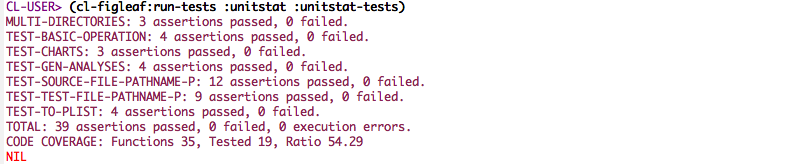
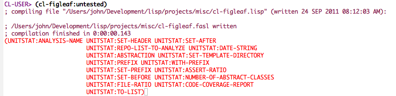

CL-FIGLEAF
Table of Contents
1 Introduction
cl-figleaf is a minimalist code coverage utility for Common Lisp, layered on top of the lisp-unit unit test framework.
It instruments a package so that it can count the number of times the macros and functions of that package are called. When unit tests are executed, the function calls are recorded. At the end of the unit test run, the counts are reported to the console.
Figleaf is conveniently invoked from a REPL as follows with the
run-tests function:
CL-USER> (cl-figleaf:run-tests :unitstat :unitstat-tests)
run-tests will execute the tests defined in the package
unit-test-package on an instrumented version of
package-under-test. At the end of the run, the results are printed
to standard output.
By design, these look like they are part of a standard lisp-unit summary.

Sample Run of Figleaf
Another useful function is cl-figleaf:untested which returns a list
of functions that were not called by any unit test. The complementary
function is tested which will return all of the functions that were
called.

Sample Output from untested function
2 Future
Figleaf has been qualified with SBCL and the lisp-unit test framework. In the future, it might be extended to work with other Common Lisp implementations and test frameworks. Even though it does not provide sophisticated code-coverage analysis, e.g. code-coverage analysis on a per line basis or on condition / decision logic, the author finds it useful and easy to use.
3 Copyright
Copyright (c) 2010-2011 John H. Poplett.
Permission is hereby granted, free of charge, to any person obtaining a copy of this software and associated documentation files (the "Software"), to deal in the Software without restriction, including without limitation the rights to use, copy, modify, merge, publish, distribute, sublicense, and/or sell copies of the Software, and to permit persons to whom the Software is furnished to do so, subject to the following conditions:
The above copyright notice and this permission notice shall be included in all copies or substantial portions of the Software.
THE SOFTWARE IS PROVIDED "AS IS", WITHOUT WARRANTY OF ANY KIND, EXPRESS OR IMPLIED, INCLUDING BUT NOT LIMITED TO THE WARRANTIES OF MERCHANTABILITY, FITNESS FOR A PARTICULAR PURPOSE AND NONINFRINGEMENT. IN NO EVENT SHALL THE AUTHORS OR COPYRIGHT HOLDERS BE LIABLE FOR ANY CLAIM, DAMAGES OR OTHER LIABILITY, WHETHER IN AN ACTION OF CONTRACT, TORT OR OTHERWISE, ARISING FROM, OUT OF OR IN CONNECTION WITH THE SOFTWARE OR THE USE OR OTHER DEALINGS IN THE SOFTWARE.